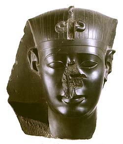

Why have many Egyptian sculptures no nose?
Few statues have survived
unbroken, and prominent features such as the nose are most vulnerable,
although many noses survive intact. Some statues may have had the noses
damaged deliberately, as in this way the senses of the person represented
in the statue could be injured--damaging a statue in this way very much
forms an attack on the person depicted. Although it is often said that
The British Museum contains the nose from the great Sphinx at Giza, this
is not true; the nose was lost by the 15th century AD.
A small fragment of a
New Kingdom restoration of the sphinx's beard, however, is on display
in the Egyptian Sculpture gallery. There are no stores of noses or other
missing pieces in the Museum's reserve collection, although the Department
does possess a few statues where the nose was restored in Antiquity. An
excellent example of this is the Late
Period royal head.
|

|
Head
of a Late Period king with damaged and restored nose.
|
|